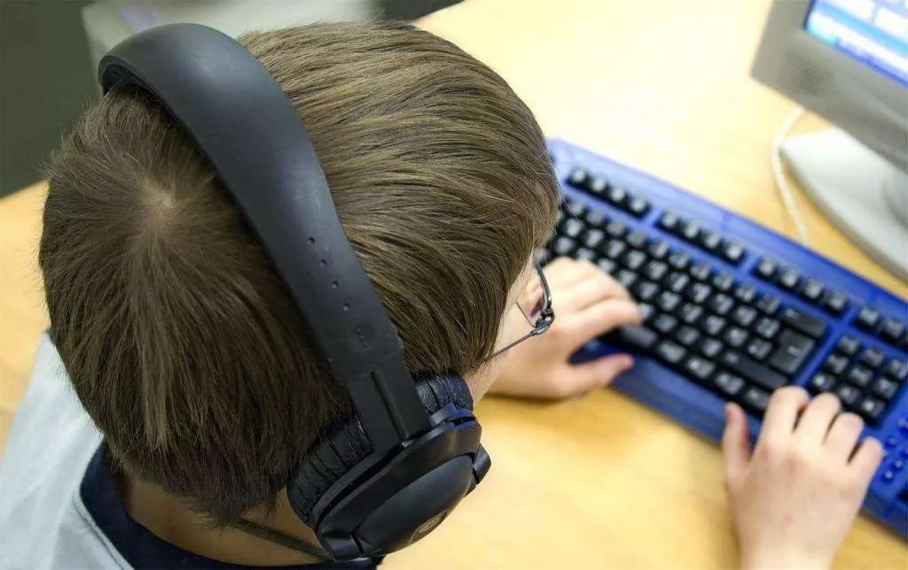

线下教育按下“暂停键”
原文链接 备份链接 《创新经济战疫指南》，是燃财经在新型肺炎疫情期间推出的特别栏目，关注创新经济企业遇到的新难题、商讨应该采取的新对策，希望能够帮助中小企业一起战胜挑战、把握机会。本文是第4期。查看前3篇请点击《哪些行业正在逆势爆 …


文/王钟的
一场突如其来的新型冠状病毒感染的肺炎疫情，延缓了各地大中小学开学的时间表。目前，由于疫情仍然持续，开学时间并不明朗。面对意外延长的假期，如何让学生在家继续学习，避免荒废功课，成了教育者必须思考和回答的问题。
对此，教育部印发《关于在疫情防控期间做好普通高等学校在线教学组织与管理工作的指导意见》，要求各高校实现“停课不停教、停课不停学”。多家在线教育头部企业响应教育部门的号召，为在家学习的学生提供免费课程。疫情让在线教育意外地走上“C位”，甚至带动节后A股开盘首日相关概念股逆市上扬。人们依稀记得，正是17年前的“非典”疫情，让当下人们熟悉的电商平台崭露头角。
评价一类新产业具有多大的发展潜力，首先观察其日常基本面。在看到“非典”疫情孕育一批电商企业的同时，也要看到电商行业在十多年间经历的坎坷。从打击假冒伪劣产品，到提高物流配送水平，电商行业为了克服其先天的弊端和不足，经历了无数的探索和试验。疫情终将会结束，社会也会回到常态，延迟开学对在线教育是一次展示的良机，但如果要把它当成发展的“拐点”，还有很多具体工作要做。
现代教育不仅是知识传授的过程，也充分参与一个人社会化的过程。在绝大多数购物场景中，面对面交易并不是刚需，很多年轻人甚至厌烦面对面磨人的杀价过程，这也是网络购物最终为大众所接受的重要因素。然而，教育恰恰存在很多面对面的刚需，学生和教师需要课堂互动，学生与学生之间需要培养友谊，教师与教师之间也有业务交流的需要。因此，“在家学习”并不是在线教育的优势，在线教育也不宜把它的弱互动性当成卖点。
就常态层面而言，在线教育的真正价值在于其推动教育平权的功能。由于国内地区发展差异大，教育资源分布不平衡，优质教育资源更是集中在大城市。而且，即便在城市地区，教育资源也分布不均，“择校”始终是困扰家长的难题，高等教育资源更是集中在部分知名高校。但是，在线教育可以弥补教育资源地区间、学校间的鸿沟，只要有一块屏幕、一根网线，学生就可以聆听名师的在线授课。
实际上，在线教育在教育平权方面已有良好实践。例如，中国青年报题为《这块屏幕可能改变命运》的报道，记录了248所西部贫困地区的中学通过直播与名校成都七中同步上课，有的学校终结了“零一本”的历史，有的学生考上了北大、清华。通过在线教育，贫困地区学校在一定程度上弥补了师资、教学管理等方面的欠缺，体现了现代教育机会平等的理念。
因为授课形式不同，在线教育也体现出传统课堂教育所不具备的一些优势。比如，课堂教育具有即时性，而且是一对多教学，学生必须紧跟教师授课的节奏，那些一时难以消化的知识点，就可能成为教学的盲区；相比之下，在线教育因为是人机互动的一对一操作，教学视频可回放，学生可以及时巩固理解薄弱的教学内容。
不管采取怎么样的教学形式，教师始终是教学的组织者和实施者。疫情之下，教师应当积极尝试在线教育平台，把以往线下教育的内容搬到线上。目前，由于开学时间还不确定，北京等地已考虑将高考模拟考放到网上的方案，学生在家答题，将答卷传给教师阅卷。针对这类特殊需求，在线教育行业应积极提供技术支持，为学生提供真实的考试感受，方便他们从容应对未来的高考。
尽管当前一些城市职场人士也习惯于使用在线教育平台，热衷于所谓“知识付费”的概念，但教育的主体终究还是学生，公共性依然是教育的本质。目前，在线教育领域也发展成了两种不同模式：一种由教育部门和相关学校牵头组织，向社会提供廉价或免费的在线课程；另一种则由在线教育企业提供，企业天然地具有营利性，相关课程的收费较高。在线教育要进一步发展，必须要明确其属性，究竟是立足于公益，还是走完全市场化的路子。
在当前学校教育组织形式、学生考查方式不发生大的变化的前提下，在线教育更应当利用其技术特点，为教学提供更便利化的渠道。比如，让更多学生感受到名师的魅力，也让一些课程内容实现线上讨论，教师实时答疑解惑。也许在线教育全面取代传统学校教育尚需时日，但人们期待它能够搅动当下教育格局中某些一成不变的部分，让教育资源分配更加公平，让教育焕发出新生。
作者系媒体评论员
校对：彭玉凤


推荐阅读

点击大图 | 没有特效药，我们就拿新型冠状病毒无计可施了吗？

点击大图 | 与非典时期相比，中国在全球价值链中的地位提高约1.6倍

原文链接 备份链接 《创新经济战疫指南》，是燃财经在新型肺炎疫情期间推出的特别栏目，关注创新经济企业遇到的新难题、商讨应该采取的新对策，希望能够帮助中小企业一起战胜挑战、把握机会。本文是第4期。查看前3篇请点击《哪些行业正在逆势爆 …
原文链接 备份链接 经济观察网 记者 万敏 准备好教案，调试好QQ，等待开课——林老师从来没想到，会以这样的方式，带领学生向着高考冲刺。 林老师是湖北省武汉市一所重点中学的高三年级任课老师、班主任。从1月30日（农历正月初六）开始，她和其 …
原文链接 备份链接 经济观察网 记者 李静 实习记者 刘兰 受到疫情影响，近期多地学校采用“线上授课”的方式响应教育部疫情期间学校“停课不停学”行动。这一行动，牵扯众多，也包括正在复习冲刺阶段的高三备考生们。 疫情对于教学工作、班级管理影 …
原文链接 备份链接 图片来源：视觉中国 记者：林北辰 编辑：文姝琪 “ 即使在网上买到了口罩，你也不一定能够用上——延迟发货是最普遍的情况；发货了，订单还要面临虚假发货、商品是三无产品的风险。 ” “你能买到口罩吗？” 这是疫情中所有人最 …
原文链接 备份链接 “ - 疫 情 之 下 - 她不会要求她的学生们将来必须成为医务工作者、科学家、警察、建筑工、老师，但她一定会要求自己的学生，好好学习，将来一定要用自己所学、所知、所拥有的知识和技能守护好那些曾经守护过他们的人。 ” …